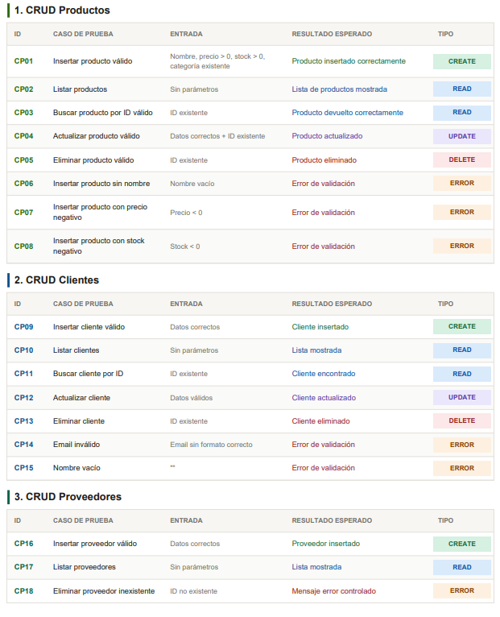
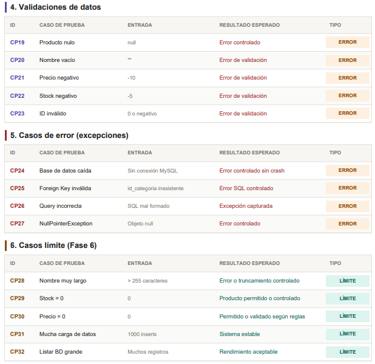
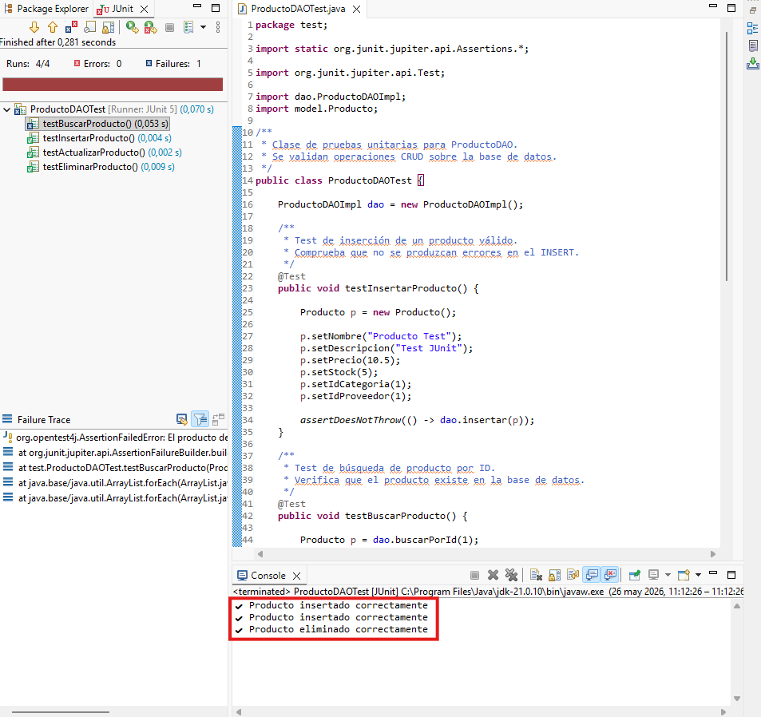
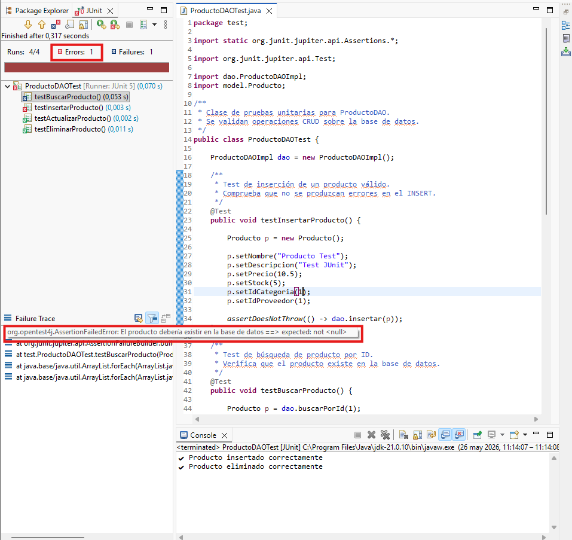
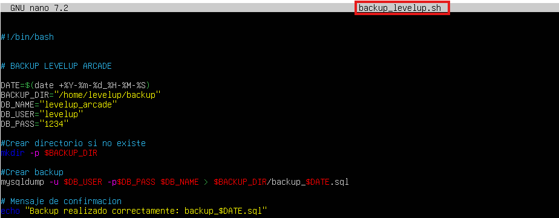
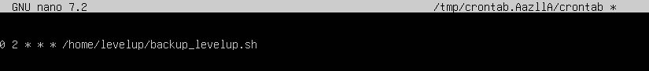

Fase 06
Fase 6 - Pruebas y Calidad
Casos de prueba, JUnit, depuracion y backups automaticos.
Objetivo
Objetivo de la fase
Validar que las operaciones principales funcionan y preparar salvaguardas de la base de datos.
Desarrollo
Desarrollo del trabajo realizado
FASE 6) PRUEBAS Y CALIDAD
• Definir los casos de pruebas. Deben incluir: operaciones CRUD,
validación de datos y casos de error y situaciones límite
• Implementar pruebas unitarias utilizando JUnit.
• Realizar depuración para corregir los errores detectados
• En el servidor Ubuntu se implementará un sistema de copias de seguridad
automáticas de la base de datos. Para ello se creará un script de backup y
Se programará una tarea automática (cron) para su ejecución periódica.
1. CREAR CARPETA DE BACKUPS En Ubuntu Server:
2. Crear archivo backup_levelup.sh:
3. DAR PERMISOS AL SCRIPT:
4. PROGRAMAR BACKUP AUTOMÁTICO
• Definir los casos de pruebas. Deben incluir: operaciones CRUD,
validación de datos y casos de error y situaciones límite
• Implementar pruebas unitarias utilizando JUnit.
• Realizar depuración para corregir los errores detectados
• En el servidor Ubuntu se implementará un sistema de copias de seguridad
automáticas de la base de datos. Para ello se creará un script de backup y
Se programará una tarea automática (cron) para su ejecución periódica.
1. CREAR CARPETA DE BACKUPS En Ubuntu Server:
2. Crear archivo backup_levelup.sh:
3. DAR PERMISOS AL SCRIPT:
4. PROGRAMAR BACKUP AUTOMÁTICO
Decisiones
Decisiones técnicas tomadas
- Los casos de prueba cubren CRUD, validaciones, errores y situaciones limite.
- JUnit se usa para pruebas unitarias sobre la logica principal.
- La depuracion se realiza desde el entorno de desarrollo para localizar fallos.
- Los backups se automatizan en Ubuntu con script y tarea cron.
Resultados
Resultados obtenidos
- Plan de pruebas definido por modulo.
- Pruebas unitarias implementadas y ejecutadas.
- Errores detectados y corregidos durante la depuracion.
- Sistema de copias de seguridad automatizado para la base de datos.
Evidencias
Galeria de capturas
{kind=link}

Casos de prueba para operaciones CRUD.{kind=link}

Casos de prueba para errores y situaciones limite.{kind=link}

Pruebas unitarias JUnit en Eclipse.{kind=link}

Depuracion y correccion de errores detectados. Creacion de carpeta de backups y permisos iniciales.{kind=link}
{kind=link}

Script backup_levelup.sh para copia de seguridad. Permisos de ejecucion del script de backup.{kind=link}
{kind=link}

Programacion de backup automatico con cron. Backup generado correctamente.{kind=link}